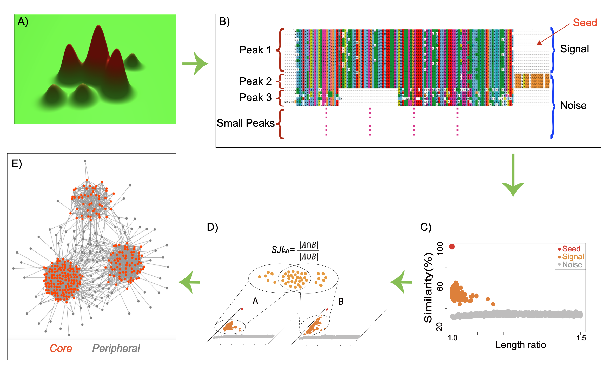
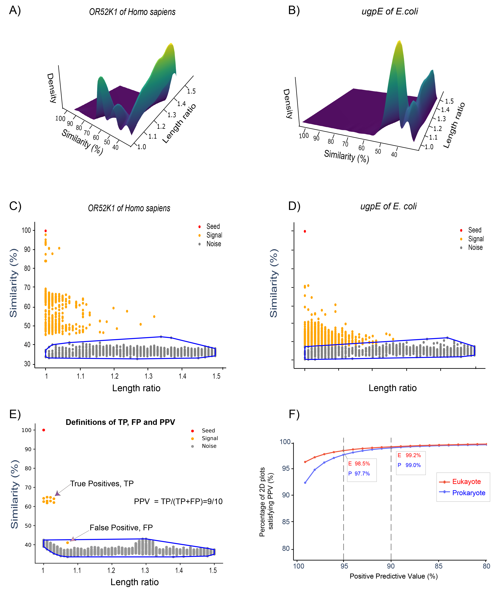

What Is the Signal Jaccard Index?
The Signal Jaccard Index (SJI) is a protein-similarity metric that compares proteins by their signal proteins: the set of homologs separated from more distant homologs by data-derived gaps in a two-dimensional similarity plot. Unlike conventional pairwise sequence-similarity approaches, SJI does not compare two proteins only by their direct sequence similarity. Instead, it compares the homolog neighborhoods associated with each protein [1].
For any given protein, referred to here as the seed, its top similar proteins are retrieved across many proteomes and placed on a two-dimensional plot. The x-axis represents the length ratio between each homolog and the seed protein, and the y-axis represents full-length sequence similarity (Figure 1C; Figure 2A–D). In most cases, the points separate into two groups with a visible gap between them. The upper group is close to the seed in both similarity and length and is defined as the signal. The lower group forms a denser cloud of more distant matches and is defined as the noise. This gap is not determined by a fixed similarity cutoff. Instead, it is inferred from the local density structure of each plot using unsupervised spectral clustering, so each protein has its own protein-specific boundary [1].
The signal set is what SJI compares. Given two proteins A
and B, each with its own signal set, SJI is defined as the
size of the intersection of their signal sets divided by the
size of their union (Figure 1D). If A and B share most of
their signal homologs across proteomes, their SJI is high.
Building the metric from signal sets, rather than from a
single pairwise similarity score, makes SJI sensitive to the
broader genomic and evolutionary context in which each
protein occurs.

Figure 1A provides a schematic fitness landscape with three major peaks. Figure 1B shows how these peaks appear as blocks in a multiple sequence alignment: within a block, both sequence similarity and full-length similarity are high; across blocks, both decrease. Figure 1C shows the two-dimensional plot itself — signal proteins cluster above the noise cloud. Figure 1D shows how SJI is computed as the Jaccard index of two signal sets. Figure 1E shows the network-level consequence: the core contains proteins with relatively stable orthology predictions, whereas the periphery contains proteins whose database assignments vary across commonly used ortholog databases. These peripheral proteins make up more than 50% of the proteins in UniProt reference proteomes.
Why a New Metric Was Needed
SJI was developed to address a practical problem in ortholog-based functional annotation. When different ortholog databases are used to annotate the same set of sequences — such as enriched reads from metagenomic data — they often assign those sequences to different ortholog groups. As a result, downstream functional annotations may diverge. This affects comparative genomics, pan-genome analysis, metagenomic interpretation, and tests of the ortholog conjecture [1].
It should also be noted that SJI focuses on functional transfer among annotated orthologs rather than on phylogenetic reconstruction per se. When a phylogenetic tree is complex, it is not always clear how to select an internal node and claim that all proteins in the subtree below that node share the same biological function. Species-overlap methods may work well for broadly conserved proteins [2], but they are less straightforward for genes affected by horizontal transfer, lineage-specific expansion, or rapid functional divergence.
My investigation began by asking whether inconsistencies among ortholog databases were technical, biological, or both, focusing on proteins classified differently across databases. An initial hypothesis was that moonlighting proteins [3] might explain some of these inconsistencies — proteins that perform multiple, mechanistically distinct functions within a single polypeptide chain. Large-scale analysis did not support this pattern as common. This negative result led to a broader question: when function changes between homologs, does similarity decline continuously, or does it show discontinuities?
The Fitness-Landscape View
A separate line of work, based on protein fitness studies and multiple sequence alignments, caught my attention. It argues that residues evolve in coupled ways and that protein fitness depends on combinations of sequence, structure, genomic context, and environment [5][6][7]. From this perspective, an ortholog group can be viewed as a region on a fitness landscape (Figure 1A). Members of the group can accumulate substitutions while remaining on the same functional peak, but acquiring a new function may require coordinated changes that move the protein to a different peak.
If this interpretation is correct, then functionally related proteins and more distant homologs should not always form a smooth continuum in similarity space. Instead, there should be valleys between different regions of homolog space. This idea motivated the two-dimensional similarity-versus-length-ratio plots used in the SJI framework, as shown in Figure 2. We show that gaps between signals and noise are ubiquitous, and that spectral clustering effectively distinguishes signals [1].

(A, B) Three-dimensional density plots for OR52K1 of Homo sapiens and ugpE of E. coli, showing two distinct density peaks separated by a valley. (C, D) Corresponding two-dimensional plots: signal proteins (orange) lie clearly above the noise cloud (grey), with the spectral-clustering boundary shown in blue. (E) Definitions of true positives (TP), false positives (FP), and positive predictive value (PPV) in this framework. (F) The vast majority of two-dimensional plots satisfy high PPV thresholds for both Eukaryotes and Prokaryotes, confirming that the signal–noise gap is a broadly reliable feature of protein homolog distributions.
What SJI Actually Measures
SJI is not simply another orthology score. It uses whole-proteome composition to identify a signal set for each protein and then measures how much two proteins' signal sets overlap. Two proteins with comparable functions are expected to have similar neighborhoods of homologs across proteomes, and SJI directly measures that shared neighborhood.
This design gives SJI several advantages. First, it incorporates information from many homologs rather than relying on a single pairwise alignment. Second, it handles inparalogs more naturally than strict one-to-one best-hit methods. Third, the resulting SJI network exposes difficult proteins as peripheral nodes. In the ProtDC framework, the network core represents proteins for which orthology prediction is relatively stable across databases, whereas the periphery contains proteins for which database assignments are more inconsistent [1].
In summary, SJI was developed from the observation that ortholog-database inconsistencies are not merely computational artifacts. They reflect, at least in part, the structure of protein evolutionary space. By identifying protein-specific gaps between signal and noise homologs, SJI provides a data-driven framework for evaluating protein similarity, ortholog consistency, and functional annotation transfer.
Why This Matters for Similarity Cutoffs
The gaps shown in Figure 2 also expose a limitation of conventional similarity-search workflows. BLAST and related tools [4] provide alignment scores, E-values, and ranked hits, but the interpretation of these values often depends on thresholds chosen by researchers. Whether a similarity score is considered high enough for ortholog prediction, functional annotation transfer, or comparative analysis is frequently determined by empirical convention or practical convenience rather than by a protein-specific biological boundary.
This is problematic because different protein families evolve under different constraints. A cutoff that is stringent for one family may be permissive for another. The valley in each two-dimensional plot provides a per-protein cutoff inferred from the data rather than imposed in advance. In this sense, SJI provides a way to replace arbitrary global similarity thresholds with locally inferred boundaries that are specific to each protein's homolog distribution.
A Note on Scale and Interpretation
Some criticism of this framework was based on experimental studies showing that a single amino acid substitution can dramatically change protein function. Such cases are real and biologically important, particularly in microevolution, protein engineering, and population genetics. However, they do not directly address the problem of functional annotation transfer across species.
Functional annotation transfer is a macroevolutionary
question. It asks whether a protein in one
organism can be treated as functionally equivalent to a
homolog in another organism, often across substantial
evolutionary distances. At this scale, the relevant issue is
not whether one mutation can alter function under a specific
experimental condition. The relevant issue is whether
homologs across many proteomes form distinguishable clusters
in similarity space. The recurring valleys observed in the
two-dimensional plots suggest that such clusters are
objectively defined.
References
- 1 Yang W, Ji J, Fang G. A metric and its derived protein network for evaluation of ortholog database inconsistency. BMC Bioinformatics. 2025;26:6. doi:10.1186/s12859-024-06023-x. PMID:39773281. PubMed
- 2 Huerta-Cepas J, Dopazo H, Dopazo J, Gabaldón T. The human phylome. Genome Biology. 2007;8:R109. doi:10.1186/gb-2007-8-6-r109. PMID:17567924. PMC
- 3 Singh N, Bhalla N. Moonlighting proteins. Annual Review of Genetics. 2020;54:265–285. doi:10.1146/annurev-genet-030620-102906. PMID:32870732. PubMed
- 4 Altschul SF, Gish W, Miller W, Myers EW, Lipman DJ. Basic local alignment search tool. Journal of Molecular Biology. 1990;215:403–410. doi:10.1016/S0022-2836(05)80360-2. PMID:2231712. PubMed
- 5 Romero PA, Arnold FH. Exploring protein fitness landscapes by directed evolution. Nature Reviews Molecular Cell Biology. 2009;10:866–876. doi:10.1038/nrm2805. PMID:19935669. PubMed
- 6 Facco E, Pagnani A, Russo ET, Laio A. The intrinsic dimension of protein sequence evolution. PLoS Computational Biology. 2019;15:e1006767. doi:10.1371/journal.pcbi.1006767. PMID:30958823. PubMed
- 7 Ding X, Zou Z, Brooks CL III. Deciphering protein evolution and fitness landscapes with latent space models. Nature Communications. 2019;10:5644. doi:10.1038/s41467-019-13633-0. PMID:31822668. PubMed